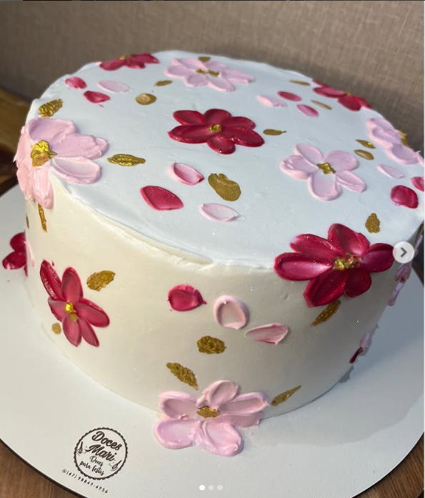
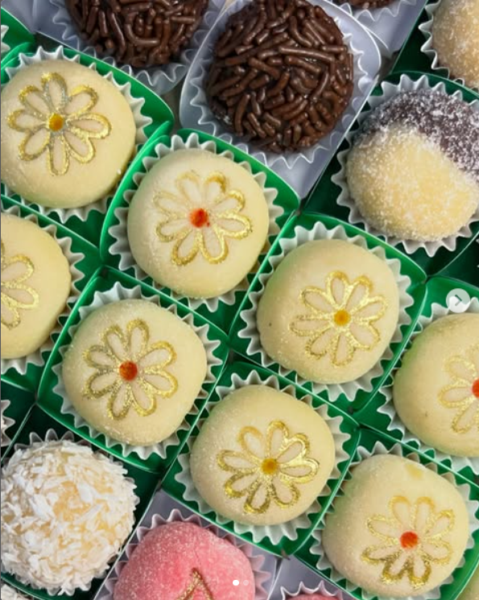

Bolos Personalizados
Você escolhe o sabor, o recheio, o tema e os detalhes, nós damos vida ao seu sonho em forma de doce! Feitos com ingredientes frescos e muito amor, nossos bolos são tão lindos quanto deliciosos.
Doceria artesanal · Gaspar, SC
Somos uma doceria artesanal apaixonada por criar os mais deliciosos e encantadores doces. Cada receita é preparada com muito carinho e dedicação, usando ingredientes selecionados para garantir o melhor sabor.

01 Feito para celebrar
Feitos para compartilhar
Cada detalhe é pensado para deixar sua comemoração ainda mais especial.
Você escolhe o sabor, o recheio, o tema e os detalhes, nós damos vida ao seu sonho em forma de doce! Feitos com ingredientes frescos e muito amor, nossos bolos são tão lindos quanto deliciosos.

Os docinhos da Doces Mari são pequenos pedaços de felicidade! Perfeitos para festas, eventos ou aquele momento de puro prazer no dia a dia, temos brigadeiros, beijinhos, cajuzinhos e muito mais!
Complemente seu evento com salgados irresistíveis da Doces Mari – porque o equilíbrio perfeito entre doce e salgado existe!
Para informações adicionais e valores, entrar em contato.
Vamos adoçar seu dia?